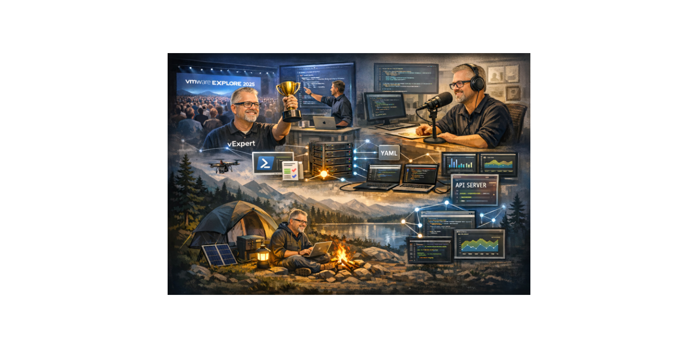
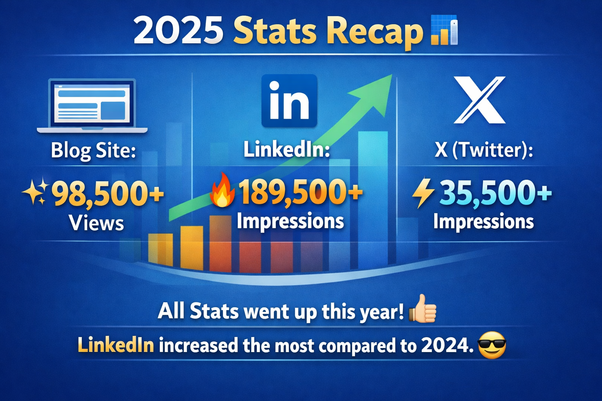
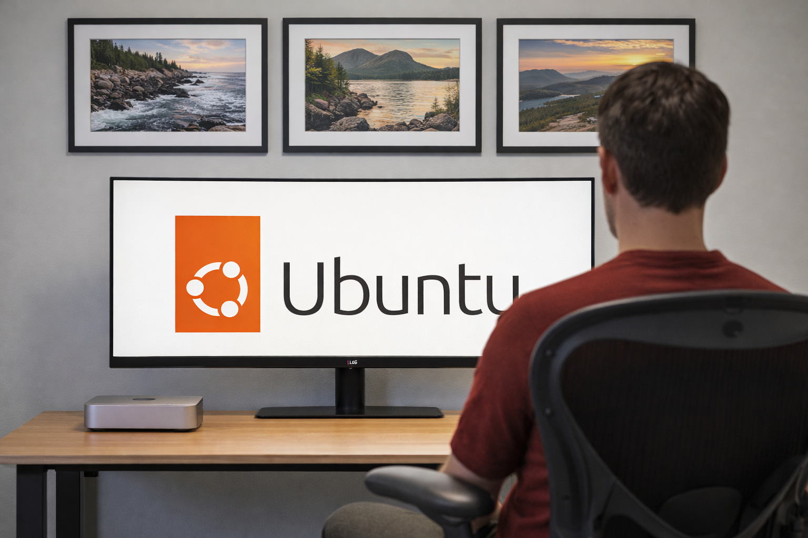
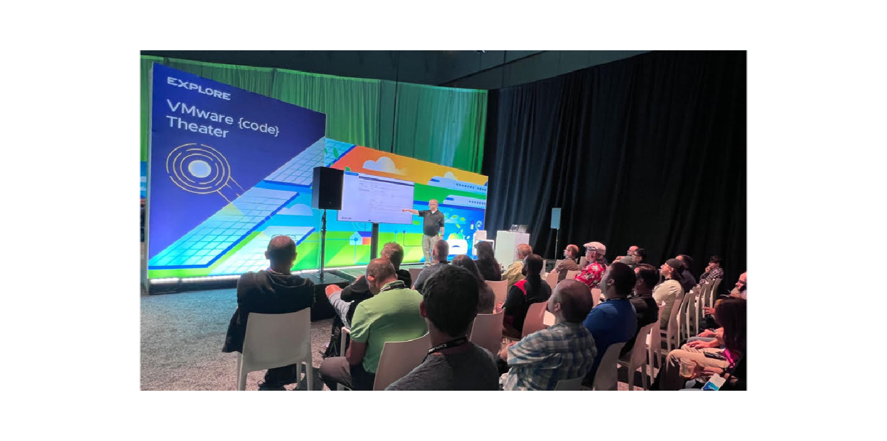

Highlights of 2025

Most-Read Blog Posts of 2025 plus other highlights
Automate boldly. Monitor smarter. Share openly. Build community.

2025 Stats Recap 📊
Blog Site:
- ✨ 100k+ Views
- 15k+ users
- 130+ countries
- 80% Desktop, 20% Mobile
- 73% Chrome, 12% Edge, 7% Safari, 5% Firefox, 3% Other
- 67% Windows, 10% MacOS, 9% iOS, 8% Android, 4% Linux, 2% Other
LinkedIn:
- 🔥 188k+ Impressions
- 41,330 Members reached
- 4,300+ Engagements
- 3,500+ Reactions
X (Twitter):
- ⚡ 35,500+ Impressions
- 525+ likes
- 155+ retweets
All Stats went up this year! 👍🏻 LinkedIn increased the most compared to 2024. 😎
Thank you all for the incredible support this year!
Stay tuned for more insights, tips, and content in 2026!
Surprising Insights from Blogging
I'm always surprised by which posts resonate the most with readers. My top-performing post was a LinkedIn post about my Home Lab, 26k+ impressions from the single post.
So, if you're ever wondering what to write about, start with what you find interesting. Chances are, someone else will find it just as interesting!
2025 | Top Blog Posts:
1. VCF Deploy | Scripted Install | Home Lab
2. Mware Aria Automation and Ansible Integration
3. VCF Operations | CPU|Overcommit Details
2025 | Top LinkedIn Posts:
1. Home Lab Discussion
2. VMware Tiered Memory Discussion
3. PowerShell MCP Discussion
I’m clearly not alone in finding home labs interesting 😎. My home lab is like a mechanic’s toolbox—necessary for my work, but also something I enjoy building and using. It’s the best kind of work: doing what I love and getting paid for it.
2025 Technology Highlights
- A Technology Highlight for me in 2025 was winning the Hackathon at VMware Explore 2025.
- I had the privilege of joining Pete Flecha and John Nicholson on the 𝗩𝗶𝗿𝘁𝘂𝗮𝗹𝗹𝘆 𝗦𝗽𝗲𝗮𝗸𝗶𝗻𝗴 𝗣𝗼𝗱𝗰𝗮𝘀𝘁.
My 2026 Tech Goals and Recommendations
Linux Desktop Experiment
- I repurposed my Intel-based Mac Mini and installed Ubuntu Desktop to see if a full-time Linux desktop could realistically replace my daily workflow. Blog to be released! The experience is going well so far.

Presenting at VMUG Connect
- I’ve submitted proposals to present at VMUG Connect 2026 across all North American locations.
Presenting at VMware Explore 2026
- VMware Explore continues to be a conference I genuinely enjoy each year. In 2026, I plan to submit sessions again and would love to participate as a Hands-On Labs contributor.

If you found this blog article helpful and it assisted you, consider buying me a coffee to kickstart my day.